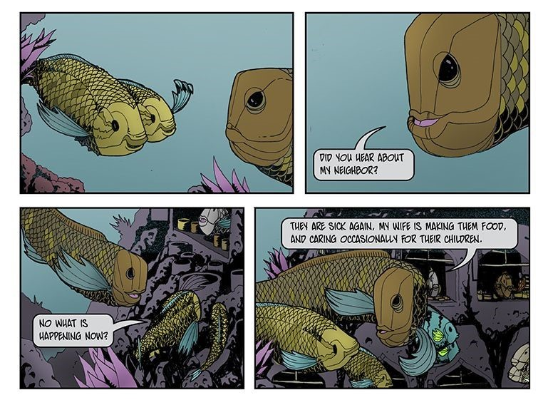

The Golden Ratio
by Bizhan Khodabandeh
Excitement would understate how I felt when I read Frank Santoro’s articles on the first appearance of the Golden Ratio in Hergé’s TIntin comic pages. Santoro used grid overlays to explain comic composition with geometric shapes in a way that could be easily understood by a graphic designer, like myself.
Golden Ratio: A numeral value studied by ancient Greek mathematicians that reappears in geometry and the natural world. It has since been used by artists and architects as a basis for the compositions and structures that are naturally pleasing to people. Many scientists have studied the reasons for the appeal of the Golden Ratio, but have yet to find a logical explanation.
As I have a background in graphic design, I was immediately drawn to the grid system because we use a similar system called the Typographic Grid. I saw an opportunity to combine my interest in design and illustration. One could say “well, that already happens in comics through the use of text and image,” but this was on another level.
Santoro’s articles encouraged me to develop my own blue-line grid using similar notations, but not by utilizing the Golden Ratio of 1.61803398875. This system uses a 1.5 ratio which is quite common in the comic world. The page dimensions are 11” x 17”. My inside content area is 10” X 15”.
This grid differs from most blue-line pages you might buy from the local comic shop because:
- it utilizes a consistent system of 3rds
- differentiated gutter sizes
- allows for staggered panels
- uses circular/linear systems for composition
In this article I will take you through how I built the grid, and how I use these visual systems to create harmonious compositions across multiple pages of a comic.
Page Layout
System of 3rds
Some blue-line comic pages that I’ve looked at aren’t spaced-out quite evenly. This grid is equally divided into 3rds across the vertical axis. I did this by overlapping two squares so that the top square terminates at the middle of the bottom square -- making the inverse true of the bottom square.
Panel Gutters
After I draw the squares, I align my horizontal gutters on the axis where the squares overlap. I also add an extra gutter notation in the middle in case I ever want to do a half-page panel.
Gutter: The space that separates panels in a comic.
Differentiated Gutter Sizes
Next, I divide the horizontal area in half two times -- creating four potential panels across. I keep the vertical gutters thinner than the horizontal gutters. Greater horizontal proximity encourages the reader to group each row of panels for easier reading.
Panel: One isolated image in a comic.
Panel Staggering
I rarely use four panels horizontally across a page because they are so thin, but I will often use two panels per row. I started studying Hergé’s work and noticed that he staggered the gutters of his comics. I came to the realization that this was to prevent what designers called “rivers.” A river occurs when there is a gap in information that coincides with a gap below. The danger is that a reader might drop down to the next line of info before completing the first one. So I placed gutters to the left and right of my middle gutter guide which will allow me to easily stagger panels throughout the page.

Using the Grid
Circular and Linear Composition Guides
After creating three horizontal guides, I place circles in the squares that result. Additionally, I include guides at 45 degrees that connect with the corners of each square and the center of the gutters. These guides will aid me in creating harmony and/or dissonance by helping me to arrange panel layout in parallel and perpendicular axes.
To illustrate this circular grid in action, here are examples from my current project (with James Moffitt) The LIttle Red Fish -- not just to hype myself but because, as far as I know, I am the only one using this specific system.
My personal preference is to use a light box to physically draw the grid in pencil on a piece of bristol paper. I then draw my panels and images (also using pencil) based on completed thumbnail sketches. I then ink them directly on the paper and color it digitally on a computer.
Light box: A flat box containing one side of translucent glass or plastic and an electric light, so as to provide an evenly-lit flat surface that makes tracing an image between two or more paper surfaces possible by hand.
When using the grid, I try to make sure that at the end of each row, there is a visual element that directs the reader to the bottom left of the page. This might be the direction that a character is facing, or an object that a character is using to point with such as: an algae kabob, dagger, beak, fin, etc. The theory is that it will aid the reader to jump to the next row of panels.
You can also use this tool to create visual dissonance. Having characters consistently face in opposite directions in the comic can be used to exaggerate the tension between them.
It is important to recognize that composition within panels helps the reading flow just as much as the gutters and layout of the overall page. I also focus especially on the use of diagonals. They are an easy way to make the comic dynamic during points in the story that can come across as bland without them.